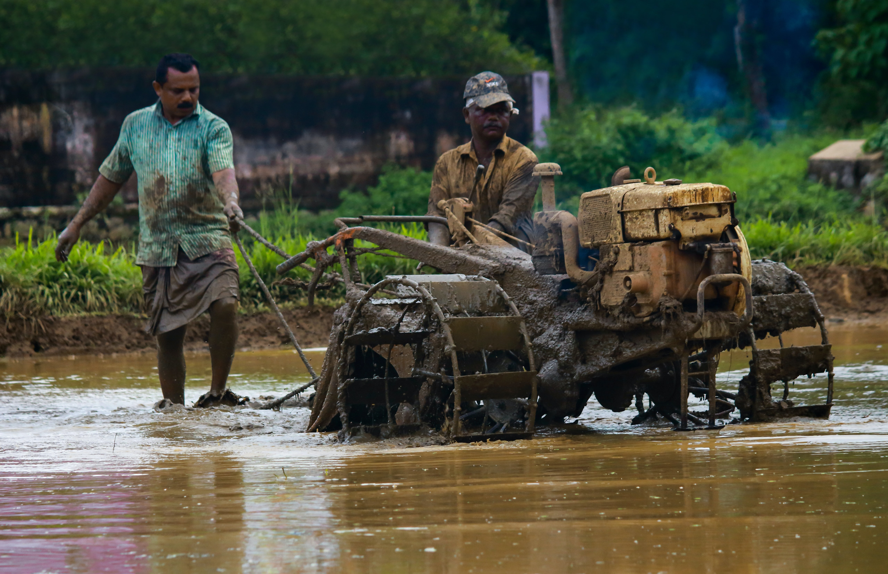

Gavi, located in Pathanamthitta district offers its visitors activities like trekking, wildlife watching, outdoor camping in specially built tents, and night safaris. Distance from Pathanamthitta To Gavi is 109 km 428 mtrs & Travel Time is 2 hour 5 mins By Road. Gavi is 14 km south west of Vandiperiyar, 28 km from Kumily, near Thekkady. Gavi is inside the Ranni reserve forest.
Gavi is a part of Seethathode Panchayath in Ranni Taluk. Gavi is part of the Periyar Tiger Reserve, and the route can be covered by car from Vandiperiyar. The entrance fee is 25 rupees per person and 50 rupees per vehicle. Cameras are 25 rupees and video cameras are charged 100 rupees. Both day and night stays are available.
Timings: Monday to Sunday from 9:30 am till 5:30 pm
Location: 28km from Thekkady

The town is also famous for the Aranmula Vallamkali (Boat Race), which is held on the annual commemoration of the week long Onam festival. The exciting event begins in the afternoon, each snake boat is thirty feet long containing four helmsman, hundred rowers and twenty five singers
Aranmula is also famous for its metal mirrors made of bell meta which is known as ‘Aranmula Kannadi’. This is a unique art which is not found any where else in the world . It is believed that a divine visitation inspired a window of this village to discover a mysterious blend of bronze which could be waxed bright in to crystal clear mirror.
Timings: 24 hours
Location: 16 km away from Pathanamthitta town
A hill town, Konni is famous for timber trade and wild elephant training centre. This is a charming town with lush meadows and hills stands on the bank of river Achakovil. It is surrounded by clove and pepper plantations. Elephants trapped from the forest area are also tamed here.
Konni with a vast expanse of lush green forests is the eco-tourism hub of Pathanamthitta district, which has a project with elephants at its nerve centre. An elephant kraal (shelter), a photo gallery, modern elephant shelters, an elephant museum, shops to sell forest produce, a children’s park, a biogas plant and a paper-making unit are part of the project, offering vivid experiences to the visitors
Timings: 24 hours
Location: 10KM from Pathanamthitta town
The Kadammanitta Devi Temple is famous for the ten day long Padayani performances held in connection with the annual festival in April/May
Padayani, also known Padeni, is a traditional folk dance and a ritual art from the central portion of the Indian state of Kerala. A ceremonial dance involving masks, it is an ancient ritual performed in Bhagavati temples. The dance is performed in honor of Bhadrakaali.
Padayani, which means 'row of warriors' is believed to have been performed by warriors trained in Kalaripayattu to display their strength and chivalry in order to frighten their enemies from the southern part of Travancore. Thus this art form traces back to the rich martial art tradition of Kalaripayattu.
Timings: 7:00 AM to 5:00 PM
Location: The temple is situated about 8km away from Pathanamthitta town.

A natural fall, down a rocky path into a ravine about 100 feet deep is the Perunthenaruvi Waterfalls. It is during monsoons that one can truly appreciate the roaring waters of Perunthenaruvi falls. The name of the place translates to ‘great honey stream’ and it has turned into a famous picnic spot in Pathanamthitta district.
There is no better place to have a pleasant peaceful time than when you are romancing with nature and surround yourself with its purity to cleanse your soul. Perunthenaruvi offers you just that.
There are two waterfalls at Perunthenaruvi - the 300 feet Panamkudantha and the 200 feet Padivathil – both of these originate from the dense woods of Sabarimala.
In every sense Perunthenaruvi is the ideal spot to recharge and rejuvenate your tired soul.
Timings: 9 am – 8 pm
Location: from the nearest railway station – Thiruvalla is about 44 km